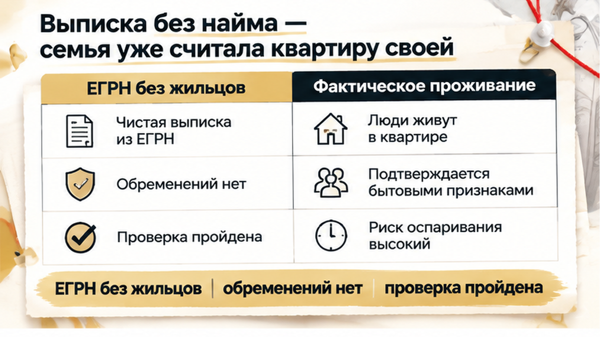
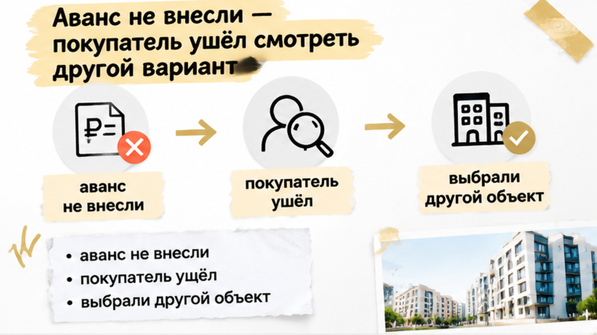

В Тюмени за 2 дня до аванса семья нашла на Авито активное объявление «сдам» по той самой квартире на вторичке, которую уже считала своей, — аванс не внесли, подготовку сделки остановили. Ипотека к тому моменту была одобрена, цена согласована, деньги лежали на счёте, дата аванса стояла в календаре. На фото те же комнаты, та же кухня и та же мебель, что была на осмотре, и снимки свежие. Продавец коротко ответил в трубку: «Старое, завтра сниму». А человек, который живёт в квартире, спокойно сказал, что собирается остаться там ещё 8 месяцев.
С вами Святослав Шакин, риелтор в Тюмени. Веду сделку сам, от звонка до регистрации. Чем закончилась эта история и почему семья в итоге не проиграла, расскажу ниже. А если ваш аванс уже на этой неделе, напишите до передачи денег: Telegram или MAX.
Перед авансом у покупателя обычно самая спокойная неделя. Кажется, всё трудное позади. Банк сказал «да», продавец согласился на цену, квартиру посмотрели днём, открыли шкафы, постояли на балконе. Осталось подписать соглашение об авансе и передать деньги.
Так было и здесь. Семья уже прикидывала, куда встанет детская кровать и сколько времени займёт переезд. Вопрос «а кто сейчас пользуется квартирой?» вслух никто не задал. Ответ казался очевидным: показывает продавец, значит, он и распоряжается.
Спокойствие обманчиво.
Обычный человек видит одобренную ипотеку. Риэлтор спрашивает: «А кто там живёт и когда выедет?»
Одобрение банка значит одно: банк готов дать деньги на своих условиях. Он смотрит на заёмщика и на квартиру как на залог. Кто в ней живёт, на каком основании и когда освободит, в одобрении не написано. Этот вопрос покупатель задаёт сам, и задаёт до денег.
Звучит скучно, но именно в таких скучных вопросах обычно и прячется неприятность. Банк своё дело сделал. Остальное — на покупателе.
Свежую выписку ЕГРН заказали заранее. Собственник совпал с продавцом, арестов нет. В обременениях нет и записи «наем жилого помещения». Для семьи это прозвучало как точка: документы чистые, можно идти дальше.
«Ну выписка же чистая».
Выписка честно отвечает на свой вопрос. Просто вопрос этот уже, чем кажется.
Объясню по-простому. Если квартиру сдают по договору найма на год и дольше, такой найм регистрируют как обременение, так требует статья 674 Гражданского кодекса. Тогда в выписке появляется запись о найме, и её видно.
А теперь о том, что в реестр не попадает. Найм на одиннадцать месяцев. Устное «живи, пока не продам». Договор, который должны были зарегистрировать, но так и не зарегистрировали.
Поэтому чистая выписка не значит, что в квартире никто не живёт. Она значит только одно: зарегистрированного найма нет.
Для семьи это было неприятное открытие. Казалось, что выписка — это паспорт квартиры, где видно всё. А на деле она показывает только то, что кто-то донёс до реестра. Остальную жизнь квартиры приходится узнавать иначе: глазами, вопросами, звонками.
Похожую разницу между бумагой и жизнью я разбирал в истории, где продавец показал справку о закрытии ипотеки, а банк всё ещё держал залог. Слова и бумаги не становятся фактом, пока их не сверили с источником.

Подсказали знакомые. Им однажды попалась квартира, которую одновременно продавали и сдавали.
Вечером покупатель открыл Авито, вбил район и количество комнат и стал листать не продажу, а аренду. Минут через двадцать нашлась та же планировка.
Сначала подумали, что показалось: похожих планировок много. Поэтому выводы с первого взгляда делать не стали.
Дальше сверяли по пунктам, как я советую делать всегда. Комнаты расположены так же. Кухня та же. Вид из окна тот же. Мебель та, что семья видела на осмотре.
Фото свежие, не трёхлетние снимки со старым ремонтом. Статус активный. В тексте обычное «сдам на длительный срок».
Обычный человек видит забытое объявление.
Риэлтор спрашивает: «А кто сейчас живёт в этой квартире?»
Скажу честно: само объявление ничего не доказывает. По нему не понять, есть ли договор найма, на какой срок, кто в нём указан и действует ли он сейчас. Его могли забыть снять. Его мог выложить посредник без ведома собственника.
Объявление не заменяет проверку документов. Но когда активное «сдам» совпадает с квартирой по фото, планировке и описанию, а до аванса два дня, это стоп-сигнал.
Не повод паниковать. Повод остановиться и задать вопросы, пока деньги ещё у вас.
Покупатель позвонил продавцу. Разговор занял минуту.
«Да это старое объявление, руки не дошли. Завтра сниму».
Живёт ли кто-то в квартире сейчас, продавец не сказал. Про договор, срок и дату, когда квартира освободится, тоже ни слова.
Тогда сделали то, что в таких историях часто решает всё: поговорили с человеком, который там живёт. Спокойно, без претензий, просто спросили. Не с порога и не с обвинением, а по-человечески: мы смотрим эту квартиру и хотим понять, какие у вас планы.
Он подтвердил: живёт здесь. И рассчитывает остаться ещё примерно восемь месяцев, так он договорился с собственником. О продаже, судя по разговору, либо не знал, либо считал, что его это не касается.
Вот что получилось, если разложить по полочкам.
Площадка говорит: квартиру сдают.
Продавец говорит: объявление старое.
Жилец говорит: живу и останусь на восемь месяцев.
А бумаг нет вообще. Ни договора найма, ни соглашения о расторжении, ни письменной даты выезда.
Когда три голоса спорят между собой, а документа нет, верить приятной версии нельзя.
Дело не в том, что жилец опасен. Обычный арендатор с понятным договором и датой выезда сделке не мешает. Риск в другом: когда квартира освободится, неясно, а договорённости никто не проверял.
Семья собиралась въехать после сделки. А в квартире мог остаться человек, уверенный в своих восьми месяцах. Похожую скрытую историю с тем, кто на самом деле распоряжается квартирой, я разбирал, когда родственники остановили продажу пожилого продавца.

Решение приняли за один вечер.
Деньги не передали. Подготовку сделки остановили.
Продавцу сказали спокойно: покажите договор с жильцом и письменное подтверждение, что он выезжает к конкретной дате. Тогда вернёмся к разговору.
Внятного ответа не было. Снова прозвучало: «Это формальность, разберёмся».
«Разберёмся» — не дата выезда.
Представьте, что было бы, отдай семья деньги в тот же день. Продавец получил аванс и ждёт сделку. Жилец уверен в своих месяцах. А покупатель стоит между ними и не может въехать в квартиру, за которую уже платит. И разговаривать приходится уже не с позиции «деньги у меня», а с позиции «верните, пожалуйста».
Покупатель выбрал другую квартиру. На этот раз объявления об аренде проверили до передачи денег, а не за два дня до неё. Продавца сразу спросили про жильцов. Договорились, что срок освобождения запишут в бумагах.
Одобрение банка никуда не делось. Ушло только время на поиск.
Это намного дешевле, чем спор за возврат аванса.
Я считаю эту историю удачной. Хотя семья так и не купила квартиру, в которую уже мысленно переехала. Да, было обидно: план с детской кроватью пришлось отложить. Зато стоп-сигнал заметили, пока все деньги были на руках.
Похожий поворот был, когда за три дня до аванса всплыл долг за свет на 186 тысяч. Сигнал другой. Логика та же: последние дни перед авансом — время проверять, а не ждать.
Если за два дня до аванса находите на Авито активное объявление об аренде той же квартиры, а продавец уверяет, что оно старое, внесли бы аванс?
Ни одна проверка не гарантирует, что сделка пройдёт без проблем.
Но несколько простых шагов до аванса снимают большую часть сюрпризов с жильцами. Я делаю их сам и советую покупателям.
Принцип один: риск внутри квартиры видят до денег, а не после. Подробно я разбирал это на истории, где обещали скидку два миллиона, а в квартире прятали риск.
Хотите пройти этот список по своей квартире до аванса? Пришлите объявление и выписку — сверю площадки, документы и условия возврата: Telegram или MAX.
Из этой истории не следует, что вторичку покупать страшно. И что любой жилец мешает сделке.
Сдаваемые квартиры продаются постоянно. Многие такие сделки проходят спокойно, потому что договор, срок и дата выезда понятны и записаны на бумаге.
В этой истории семья ничего не потеряла. Аванс остановили вовремя, вопросы задали до денег, а следующую квартиру проверили заранее.
Так и стоит действовать: сначала понять, кто живёт в квартире, на каком основании и когда она реально освободится. Потом — аванс.